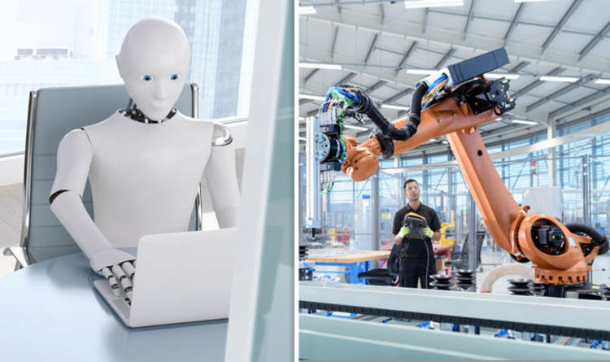

Bostrom and Muller (2016) has carried out an investigation on the timeline effects of artificial intelligence on human intervention and development. They speculated that the 1/2 chances (one in two) render the probability of high intelligent machine development within 2030 – 40, while raising 9/10 chances in 2075. Experts opined that the system will move to “Superintelligence” in less than 30 years.

Considerable advancements have been made in Robotics that represents a large branch of AI in computer science. Robotic science deals with the simulation of human cognitive function by a machine. As mentioned elsewhere, function of robotics branch of AI basically depend on many factors, including designing, construction, operation and applications of robots. The basic algorithm in Robotic system research confirms different types of AI in robotics development. The strong and weak artificial intelligence are the two basic types of robotic systems available in the marketplace. It is reported that AI is particularly designed as a program for a specific task that represents a weak or narrow artificial intelligence. Siri in apple applications is the best example for weak AI that was basically developed with human cognitive simulation. The development of such technology is limited with restricted programs. Therefore, Siri and Alexa can reply to some questions those that are designed with a specific algorithm. On the other hand, strong artificial intelligence is an Artificial General Intelligence. It has the superior capacity to interpret a programmed question or find out a probable solution of an unknown task. The beauty of this AGI-technology is that there are a lot of scope for further development based on the innovation investigation or taking into account the user’s observations, though controversies are confronting the algorithms or systems outputs that need to be addressed in the future.
Interestingly, in this 21st century, IT business entertainers are maximizing exploitation of AI application and tremendously reaching to the consumer’s doors with high potential in terms of growth and innovation as an alternative of human interventions in social, economic, and global development. More precisely, AI is now exposed as a “Power” in huge operation including business venture development and human healthcare. The reality is that, even with such tremendous power of AI, the ever-evolving and increasingly capable machines are now facing enormous challenges to cope with the uncountable variables that are being posed each and everyday. Our lives are set to change in just a couple of decades. Read about timeline
